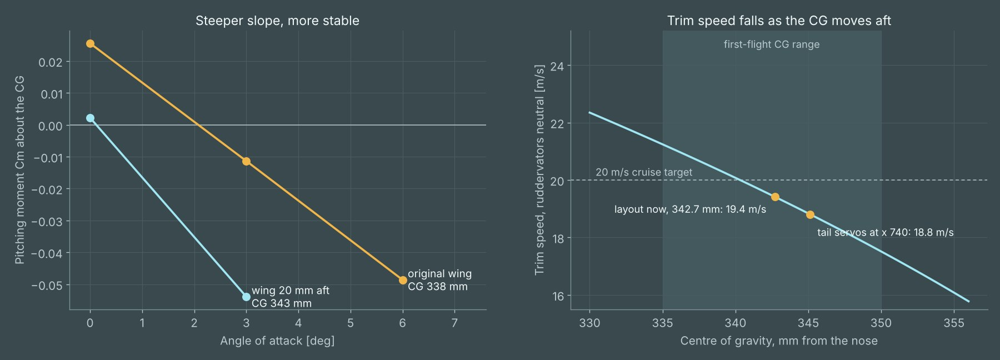
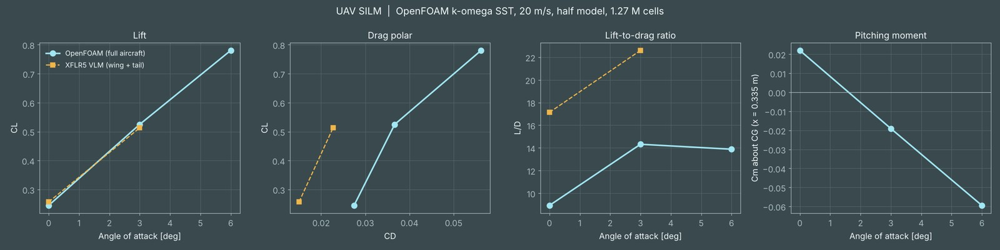
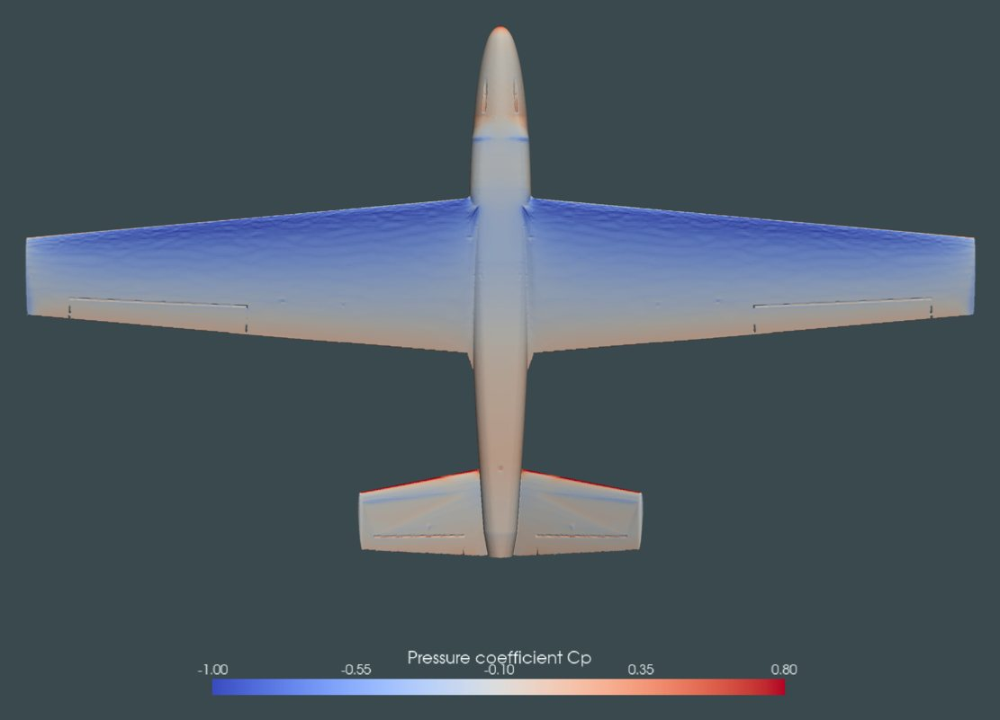
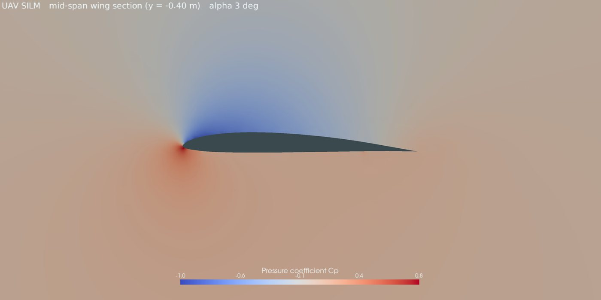
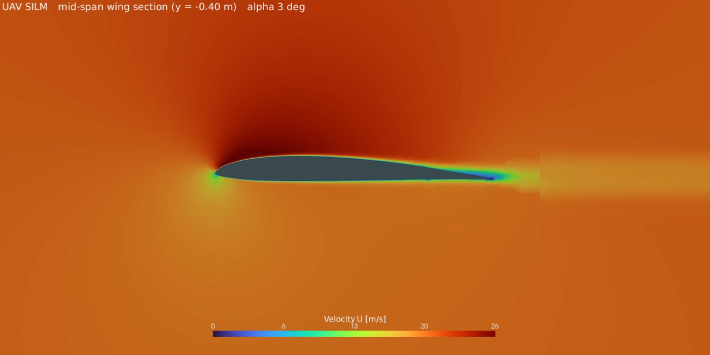
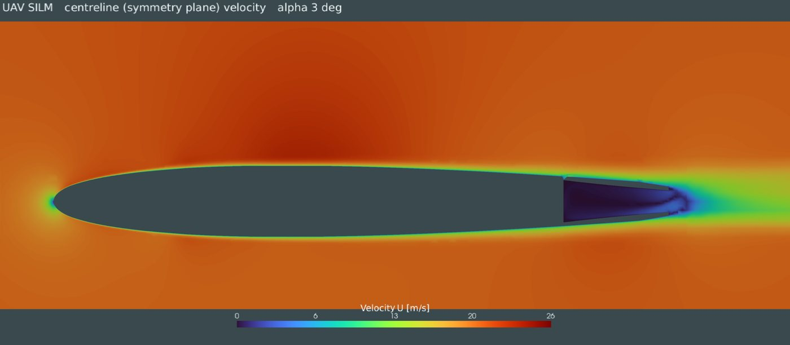
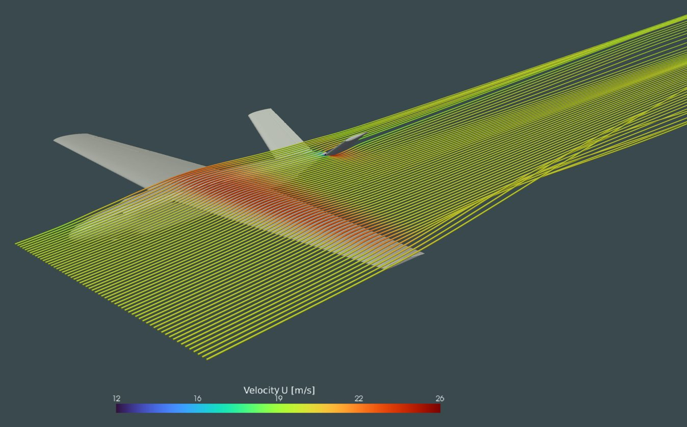
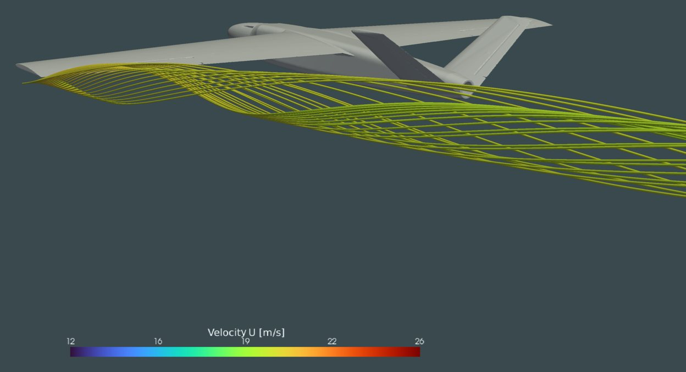
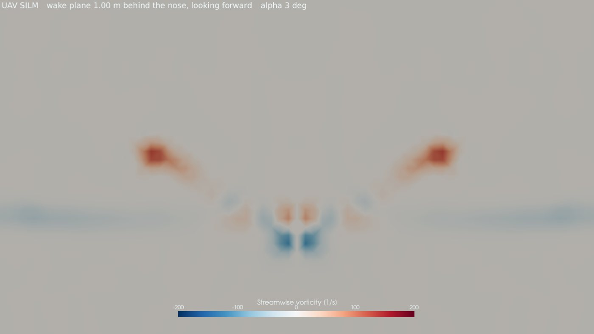

OpenFOAM CFD of the full aircraft
A 3D RANS simulation of the complete airframe at 20 m/s. Lift and stability agree closely with XFLR5, drag is higher once the fuselage and fully turbulent flow are included, and moving the wing 20 mm aft made the aircraft comfortably stable.

OpenFOAM results for the wing-aft geometry at 20 m/s. The particles move at about 1/16 of real speed and follow the computed streamlines. The aircraft pitches to the chosen angle of attack so the oncoming air stays horizontal. Blue on the surface is suction, red is stagnation.
After the balance check we moved the wing 20 mm aft in CAD and ran the same CFD again at 0° and 3°.
| Original wing | Wing 20 mm aft | |
|---|---|---|
| CL at 0° / 3° | 0.245 / 0.525 | 0.243 / 0.523 |
| CD at 0° / 3° | 0.0275 / 0.0367 | 0.0276 / 0.0368 |
| Neutral point | 363.6 mm | 381.8 mm |
| Static margin, same components | 13.2% (CG 337.8 mm) | 20.0% (CG 342.7 mm) |
| Trim speed, ruddervators neutral | about 15 m/s | 19.4 m/s |

Lift and drag barely changed, so the performance figures still hold. The neutral point moved almost as far as the wing, while the CG moved only about 5 mm. That raised the static margin from 13% to 20% and brought the trim speed close to our 20 m/s cruise target, without adding any weight.
The first run, on 3 November, used the original wing position. Pitching moments are about x = 0.335 m, the CG of our earlier XFLR5 design point.
| Angle of attack | CL | CD | L/D | Cm | XFLR5 CL / CD |
|---|---|---|---|---|---|
| 0° | 0.245 | 0.0275 | 8.9 | +0.022 | 0.257 / 0.015 |
| 3° | 0.525 | 0.0367 | 14.3 | −0.019 | 0.513 / 0.0227 |
| 6° | 0.781 | 0.0562 | 13.9 | −0.060 | not run |

Within 5% at 0° and 3°. The lift slope is 0.089 per degree, so the wing and tail sizing from XFLR5 holds up in full 3D flow.
The pitching moment falls as angle of attack rises, so the aircraft returns to trim after a disturbance. But the neutral point came out at 363.6 mm, further forward than XFLR5 predicted, so the balance needed more care. See Wing moved aft.
XFLR5 models only the wing and tail with some laminar flow. The CFD adds the fuselage, nose and tail boom and treats the boundary layer as fully turbulent, which overestimates friction. The real value likely lies between the two; flight tests will tell.







The tip vortex is where most of the induced drag comes from. It is why drag grows faster than lift at higher angles of attack, and why best L/D occurs around 3 to 4° rather than higher. You can see it in the 3D view above: the particles leaving the wing tips curl around each other.
- Each case ran until residuals had fallen about five orders of magnitude and lift had stopped changing.
- We ran one mesh resolution, without a mesh-independence study, so we treat drag as accurate to roughly ±15%.
- The model assumes turbulent flow everywhere, which overstates skin-friction drag at this Reynolds number (about 270,000).
- The hinge gaps at the aileron and ruddervators are smaller than the mesh cells and are not resolved.
- For the wing-aft case we moved the wing and spar 20 mm and sealed the wing root with a short extension; the real redesign moves the wing saddle with the wing.
Neither aircraft has flown yet. Figures are design estimates from CFD and calculation, not flight-test data.